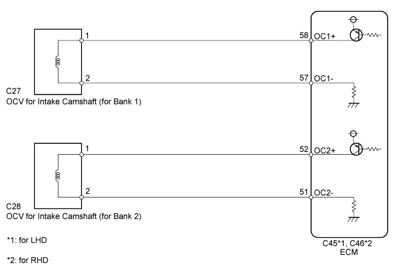
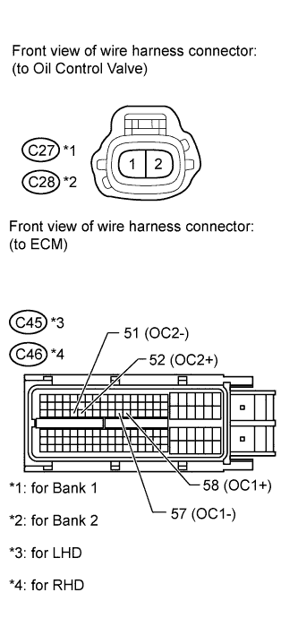

DTC P0010 Camshaft Position "A" Actuator Circuit (Bank 1) |
DTC P0020 Camshaft Position "A" Actuator Circuit (Bank 2) |

| DTC Code | DTC Detection Condition | Trouble Area |
| P0010 | An open or short in the Cam Timing Oil Control Valve (OCV) (for intake side of bank 1) circuit (1 trip detection logic). |
|
| P0020 | An open or short in the Cam Timing Oil Control Valve (OCV) (for intake side of bank 2) circuit (1 trip detection logic). |
|

| 1.CHECK DTC |
Clear DTC after recording the freeze frame data and DTC (Click here).
Turn the engine switch off.
Allow the engine to idle and check for DTC.
Check that P0010 or P0020 is not output.
|
| ||||
| OK | ||
| ||
| 2.INSPECT CAM TIMING OIL CONTROL VALVE ASSEMBLY |
 |
Disconnect the OCV connector.
Measure the resistance according to the value(s) in the table below.
| Tester Connection | Condition | Specified Condition |
| 1 - 2 | 20°C (68°F) | 6.9 to 7.9 Ω |
|
| ||||
| OK | |
| 3.CHECK HARNESS AND CONNECTOR (CAM TIMING OIL CONTROL VALVE - ECM) |
 |
Disconnect the OCV connector.
Disconnect the ECM connector.
Measure the resistance according to the value(s) in the table below.
| Tester Connection | Condition | Specified Condition |
| C27-1 - C45-58 (OC1+) | Always | Below 1 Ω |
| C28-1 - C45-52 (OC2+) | Always | Below 1 Ω |
| C27-2 - C45-57 (OC1-) | Always | Below 1 Ω |
| C28-2 - C45-51 (OC2-) | Always | Below 1 Ω |
| C27-1 or C45-58 (OC1+) - Body ground | Always | 10 kΩ or higher |
| C28-1 or C45-52 (OC2+) - Body ground | Always | 10 kΩ or higher |
| C27-2 or C45-57 (OC1-) - Body ground | Always | 10 kΩ or higher |
| C28-2 or C45-51 (OC2-) - Body ground | Always | 10 kΩ or higher |
| Tester Connection | Condition | Specified Condition |
| C27-1 - C46-58 (OC1+) | Always | Below 1 Ω |
| C28-1 - C46-52 (OC2+) | Always | Below 1 Ω |
| C27-2 - C46-57 (OC1-) | Always | Below 1 Ω |
| C28-2 - C46-51 (OC2-) | Always | Below 1 Ω |
| C27-1 or C46-58 (OC1+) - Body ground | Always | 10 kΩ or higher |
| C28-1 or C46-52 (OC2+) - Body ground | Always | 10 kΩ or higher |
| C27-2 or C46-57 (OC1-) - Body ground | Always | 10 kΩ or higher |
| C28-2 or C46-51 (OC2-) - Body ground | Always | 10 kΩ or higher |
|
| ||||
| OK | ||
| ||